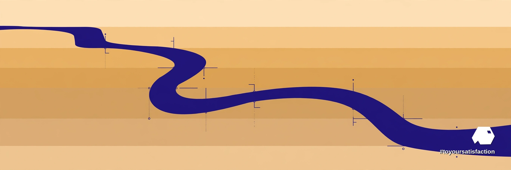

Ovia Inc — Articles
A Correct Metric Is Only Step One: Teaching the Semantic Layer the Business Itself

The October update
The October update from the Datus team, published October 31, 2026, carries a thesis in its title: teaching the semantic layer the business. Two release trains shipped together. Datus Agent moved to 0.4.3 and 0.4.4, adding a built-in OntologyAnalyst subagent and stronger automatic extraction of lineage and business context from historical SQL, project code and metadata. Dosi, the semantic engine underneath, moved from 0.1.13 to 0.2.0, with Ontology Mapping split into the Apache Ossie standard, Derived Subtypes, level-of-detail calculations across fact tables, native execution on Athena, Redshift and SAP HANA, and hot reloading of models over MCP.
From definitions to objects
A first-generation semantic layer answers one kind of question well: what is the certified definition of revenue, churn, or margin, and which SQL computes the number correctly? The October work pushes past definitions toward objects. The ontology layer names the business entities — customer, order, account — and the relationships between them, then maps those concepts onto the semantic models beneath. An agent equipped with objects can explore: follow a customer into orders, orders into fulfilment, fulfilment into exceptions. The OntologyAnalyst subagent exists precisely for that traversal, using concepts, relationships and mappings to query metrics and detail together rather than treating every question as a lone metric lookup.
Rules become executable
Derived Subtypes carry the argument one step further. A rule such as “Premier Customer” — some combination of tenure, spend and standing that every company defines and few companies write down consistently — becomes executable, versioned semantics: compiled into SQL by the engine, validated like code, reused everywhere the concept applies. The business rule stops living in slide decks and individual memory. Change the rule, and the change is a versioned event with a history, not a quiet edit inside one analyst's query. After definitions come rules; after rules, the layer starts to hold the company's actual decision logic.
Lineage from the SQL that already exists
The adoption path matters as much as the architecture. Rather than demanding a modelling programme before any value appears, the 0.4.3 extraction work mines the estate that already exists — historical SQL, project code, metadata — and derives lineage and business context from the queries the organisation actually ran. Institutional knowledge usually sits in exactly those artefacts: the joins everyone trusts, the filters nobody documented, the exceptions carved out years ago for reasons worth recovering. Mining the record turns archaeology into configuration.
What to watch
Business intelligence and data work at Ovia keeps returning to the same sequence: definitions first, because a wrong metric poisons everything downstream; rules second, because decisions repeat; judgment last, because judgment is what remains once the repeatable parts are encoded honestly. Context engineering is the discipline that connects the three — the layer an agent reasons over is only as trustworthy as the semantics underneath. Watch whether ontology features survive contact with messy real estates, whether versioned business rules become a governance habit, and whether rival semantic engines adopt the same objects-and-rules direction.
A sequencing warning inside the update deserves underlining. Teams often treat ontology work as a phase that begins after the warehouse is clean and the dashboards agree — a reward for maturity rather than a tool for reaching it. The extraction direction argues the opposite: the ontology is how an estate becomes legible in the first place, mined from the SQL the business already runs and sharpened as the rules are made executable. Waiting for a perfect foundation before naming the business properly usually means the naming never happens, and the agents arriving now will reason over whatever semantics exist — documented or not.
References
- Harrison Zhao (Datus) — “Datus October Update: Teaching the Semantic Layer the Business”, Medium, October 31, 2026: https://medium.com/@linux.hust/datus-october-update-teaching-the-semantic-layer-the-business-datus-blog-7f5401c6abca